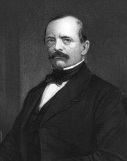

Otto von Bismarck (1815-1898), modern Almanya ulusunun kurucusu kabul edilen on dokuzuncu yüzyıl politikacısı ve diplomatıydı. 1800’lerin ortalarına gelmeden Almanya, minik, birbiriyle savaşan devletlerden oluşan bir yamalı bohça gibiydi. Almanya’nın parçalanması, en sonunda 1806’da tamamen ortadan kalkışından önce kademe kademe düzinelerce parçaya bölünmüş olan Kutsal Roma İmparatorluğu’nun bir mirasıydı. Kayzer I. Wilhelm adına çalışan Bismarck, bu devletleri bir birleşik imparatorluk altında birleştirebilmişti.

Bismarck’ın kendisi bir askerî yetkilinin oğlu olarak daha güçlü Alman devletlerinden biri olan Prusya’da doğmuştu. Politikaya bir muhafazakâr olarak otuzlarında girdi. Başlangıçtaki endişelerine rağmen, Almanya’nın birleşmesi hedefini tüm kalbiyle kucakladı.
Prusya şansölyesi veya başbakanı olarak atanan Bismarck, birleşmeye karşı olan muhalefetin üstesinden gelmek için tehdit gücünü ve diplomasiyi kullandı. Aynı zamanda giderek büyüyen Alman milliyetçiliği duygusunu da teşvik etti. 1870’te Bismark, Prusya ile birleşmesi için diğer Alman devletlerini kolayca ikna edebilecek şekilde Fransa’yla bir savaşı kurnazca kışkırttı. Birleşik bir Alman İmparatorluğu, 1871’de Prusya’nın Fransa karşısında elde ettiği hızlı bir zafer sonrası ortaya çıktı.
Ardından Bismarck, kayzerin tüm güvenini kazandı ve büyük ölçüde yeni Alman imparatorluğunu yönetti. Bismarck, bir liberal değildi, ama imparatorluğu güçlendirmek üzere bir dizi reform başlattı. Ortak para birimini geliştirdi, pek çok idarî reformu yasalaştırdı ve birliği somutlaştırma çabasında tüm imparatorluk için tek bir kanunlar seti oluşturdu.
Ancak Bismarck’ın kurduğu Alman imparatorluğu, kısa ömürlü oldu. 1888’de Wilhelm’in ölümünden sonra, II. Wilhelm tahta geçmesinden kısa bir süre sonra Bismarck’ı istifa etmeye zorladı. Bismarck’ın istikrarlı eli olmaksızın Alman dış ilişkileri, kötüye doğru bir dönüş sergiledi. 1914’te II. Wilhelm, imparatorluğu sona erdirecek bir karar vererek Almanya’yı I. Dünya Savaşı’na sürükleyecek vahim bir seçim yaptı. Ve on dokuzuncu yüzyılda Bismarck’ın Almanlar’ı birleştirmek için kullandığı milliyetçilik gücü yirminci yüzyılda felaket sonuçlara yol açtı.
EK BİLGİLER:
1. Bismarck’a, sertliği ve kararlılığı ile yaptığı şöhretten dolayı ‘Demir Şansölye’ lakabı verildi.
2. Bismarck, ilki 1849’da bir öğrenci tarafından ve tekrar 1874’te bir varil yapımcısı tarafından olmak üzere iki suikast girişiminden kurtuldu.
3. Bismarck’tan sonra onun adı verilen devasa bir Alman savaş gemisi, çok önemli bir II. Dünya Savaşı deniz muharebesinde 1941 yılında İngilizler tarafından batırıldı.
4. Ağırlıklı olarak Alman-Amerikan yerleşimcilerden oluşan ABD eyaleti Kuzey Dakota’nın başkenti, Bismarck adıyla anıldı.